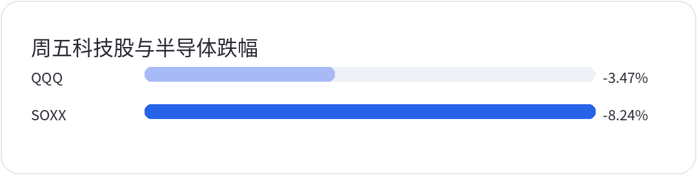

<div style="margin:0;padding:0;background:#f5f7fa;color:#2a2a34;font-size:16px;line-height:1.9;font-family:-apple-system,BlinkMacSystemFont,'SF Pro Text','PingFang SC','Hiragino Sans GB','Microsoft YaHei',Arial,sans-serif;font-variant-numeric:tabular-nums;font-feature-settings:'tnum' 1,'lnum' 1;text-align:left !important;text-align-last:left;letter-spacing:0;word-spacing:normal;white-space:normal;word-break:normal;box-sizing:border-box;"><div style="margin:0;background:#ffffff;padding:28px 22px 44px 22px;box-sizing:border-box;text-align:left !important;text-align-last:left;letter-spacing:0;word-spacing:normal;white-space:normal;word-break:normal;"><p style="display:block;width:100%;margin:0 0 12px 0;padding:0;color:#2763e9;font-size:10px;line-height:1.6;font-weight:650;letter-spacing:0.12em;text-align:center !important;text-align-last:center;word-spacing:normal;white-space:normal;word-break:normal;box-sizing:border-box;">美股 · 期权 · 资讯 · 观点</p><div style="margin:0 0 30px 0;padding:0;text-align:center !important;text-align-last:center;word-spacing:normal;white-space:normal;word-break:normal;box-sizing:border-box;"></div><div style="margin:0 0 0 0;padding:28px 0 0 0;text-align:left !important;text-align-last:left;letter-spacing:0;word-spacing:normal;white-space:normal;word-break:normal;box-sizing:border-box;"><div style="margin:0 0 12px 0;padding:0;text-align:left !important;line-height:1.2;border:0;display:flex;align-items:center;gap:10px;text-align-last:left;letter-spacing:0;word-spacing:normal;white-space:normal;word-break:normal;box-sizing:border-box;"><span style="display:inline-block;flex:0 0 auto;vertical-align:middle;color:#2763e9;font-size:12px;font-weight:850;letter-spacing:0.12em;line-height:1.2;text-transform:uppercase;border:0;box-sizing:border-box;">0 · RISK</span><span style="display:block;flex:1 1 auto;min-width:36px;vertical-align:middle;height:1px;margin:0 0 2px 0;background:#2763e9;line-height:1px;font-size:0;border:0;box-sizing:border-box;"></span></div><p style="margin:0 0 16px 0;padding:0;color:#2a2a34;font-size:22px;line-height:1.45;font-weight:850;text-align:left !important;letter-spacing:0;text-align-last:left;word-spacing:normal;white-space:normal;word-break:normal;box-sizing:border-box;">双破位之后，放慢进攻节奏</p><p style="margin:0 0 16px 0;padding:0;color:#454550;font-size:16px;line-height:1.9;font-weight:400;text-align:left !important;letter-spacing:0;word-spacing:normal;white-space:normal;word-break:normal;text-align-last:left;box-sizing:border-box;">周五过后，进攻节奏该慢下来了。10月30日，<strong style="color:#2a2a34;font-weight:700;box-sizing:border-box;">QQQ</strong>收于690.49美元，跌3.47%；<strong style="color:#2a2a34;font-weight:700;box-sizing:border-box;">SOXX</strong>收于471.51美元，跌8.24%。此前观察的696和486双双失守，半导体跌得尤其重，科技股要靠芯片股带动反弹也更难了。即使下周出现反抽，先看这些位置能否收回来。</p><p style="margin:4px 0 6px 0;padding:0;text-align:center !important;text-align-last:center;word-spacing:normal;white-space:normal;word-break:normal;box-sizing:border-box;"></p><p style="margin:0 0 16px 0;padding:0;color:#9a9aa8;font-size:12px;line-height:1.6;text-align:center !important;text-align-last:center;word-spacing:normal;white-space:normal;word-break:normal;box-sizing:border-box;">2026年10月30日常规交易时段，较前一交易日收盘；条长表示跌幅大小，数值保留负号。</p><p style="margin:0 0 16px 0;padding:0;color:#454550;font-size:16px;line-height:1.9;font-weight:400;text-align:left !important;letter-spacing:0;word-spacing:normal;white-space:normal;word-break:normal;text-align-last:left;box-sizing:border-box;">必需消费ETF <strong style="color:#2a2a34;font-weight:700;box-sizing:border-box;">XLP</strong>当天上涨1.41%，防御资产与科技股走出了明显反差。风险偏好转弱已经有迹可循，整个市场是否陷入流动性危机，仅凭这几只ETF还判断不了。低估这次下跌，容易继续加仓；认定市场全面崩盘，又容易在急跌时一次卖完。</p><p style="margin:0 0 16px 0;padding:0;color:#454550;font-size:16px;line-height:1.9;font-weight:400;text-align:left !important;letter-spacing:0;word-spacing:normal;white-space:normal;word-break:normal;text-align-last:left;box-sizing:border-box;">周五，洛根和穆萨勒姆继续主张进一步收紧货币政策。科技股需要同时消化融资成本和折现率压力，只看AI需求难以判断方向。下一笔买入之前，先算现有仓位还能承受多少下跌。价格跌了多少可以直接看到，是否值得买还得算估值。</p></div><div style="margin:30px 0 0 0;padding:28px 0 0 0;text-align:left !important;text-align-last:left;letter-spacing:0;word-spacing:normal;white-space:normal;word-break:normal;box-sizing:border-box;"><div style="margin:0 0 12px 0;padding:0;text-align:left !important;line-height:1.2;border:0;display:flex;align-items:center;gap:10px;text-align-last:left;letter-spacing:0;word-spacing:normal;white-space:normal;word-break:normal;box-sizing:border-box;"><span style="display:inline-block;flex:0 0 auto;vertical-align:middle;color:#2763e9;font-size:12px;font-weight:850;letter-spacing:0.12em;line-height:1.2;text-transform:uppercase;border:0;box-sizing:border-box;">1 · FOCUS</span><span style="display:block;flex:1 1 auto;min-width:36px;vertical-align:middle;height:1px;margin:0 0 2px 0;background:#2763e9;line-height:1px;font-size:0;border:0;box-sizing:border-box;"></span></div><p style="margin:0 0 16px 0;padding:0;color:#2a2a34;font-size:22px;line-height:1.45;font-weight:850;text-align:left !important;letter-spacing:0;text-align-last:left;word-spacing:normal;white-space:normal;word-break:normal;box-sizing:border-box;">AI扩张，先过融资这一关</p><p style="margin:0 0 16px 0;padding:0;color:#454550;font-size:16px;line-height:1.9;font-weight:400;text-align:left !important;letter-spacing:0;word-spacing:normal;white-space:normal;word-break:normal;text-align-last:left;box-sizing:border-box;">AI建设要先花钱，客户回款和投资回报往往在后面。扩建数据中心、采购芯片，以及电力和租赁承诺，都需要资金支持。经营现金流覆盖不了的部分，要向债权人或股东筹措。企业以什么利率借钱、提供什么抵押、何时到期，都会影响扩张能走多远。</p><p style="margin:0 0 16px 0;padding:0;color:#454550;font-size:16px;line-height:1.9;font-weight:400;text-align:left !important;letter-spacing:0;word-spacing:normal;white-space:normal;word-break:normal;text-align-last:left;box-sizing:border-box;">微软<strong style="color:#2a2a34;font-weight:700;box-sizing:border-box;">MSFT</strong>仍能获得大规模、长期限的债务资金承诺。公司10月29日完成250亿美元、十个批次债券定价，期限约两年至四十年，预计11月4日交割。据彭博报道，峰值认购订单约1150亿美元，为发行额的4.6倍。订单显示买方需求，本次定价规模仍为250亿美元。这笔融资用于一般企业用途，并未全部限定为AI投入。</p><p style="margin:0 0 16px 0;padding:0;color:#454550;font-size:16px;line-height:1.9;font-weight:400;text-align:left !important;letter-spacing:0;word-spacing:normal;white-space:normal;word-break:normal;text-align-last:left;box-sizing:border-box;">CoreWeave <strong style="color:#2a2a34;font-weight:700;box-sizing:border-box;">CRWV</strong>的信用压力则在10月中旬受到关注。路透10月15日报道，其五年期违约保护成本一度超过1000个基点。较高的保护成本反映债市对风险的担忧，也可能提高后续融资和再融资的门槛，但不代表违约已经发生。</p><p style="margin:0 0 16px 0;padding:0;color:#454550;font-size:16px;line-height:1.9;font-weight:400;text-align:left !important;letter-spacing:0;word-spacing:normal;white-space:normal;word-break:normal;text-align-last:left;box-sizing:border-box;">《金融时报》10月30日报道，黑石预计Anthropic上市后可能暂时无法获得投资级评级。这只是对未来评级的预期。如果最终评级低于投资级，潜在买方范围和融资成本可能受到影响。评估资金缺口时，要分清上市计划、融资承诺和已经交割的资金。</p><p style="margin:0 0 16px 0;padding:0;color:#454550;font-size:16px;line-height:1.9;font-weight:400;text-align:left !important;letter-spacing:0;word-spacing:normal;white-space:normal;word-break:normal;text-align-last:left;box-sizing:border-box;">债权人关心本金和利息能否按约收回，股东还要承担投入回报偏低、估值下降的风险。认购热烈说明借钱有买方，股票是否值得买仍要另算。公司即使借得到钱，资本开支若持续消耗经营现金流，自由现金流迟迟没有改善，股价仍可能承压。</p><p style="margin:0 0 16px 0;padding:0;color:#454550;font-size:16px;line-height:1.9;font-weight:400;text-align:left !important;letter-spacing:0;word-spacing:normal;white-space:normal;word-break:normal;text-align-last:left;box-sizing:border-box;">研究AI公司，还得把债务期限和客户回款日期放在一起。靠现有业务回款扩张，与依赖下一轮融资接续，承受的风险不同。若债务先到期、客户还没付款，资金缺口就需要提前安排。新融资要求更高回报，会挤压项目利润；已有固定利率债务的合同利息则不会因此立即全部上调。</p><p style="margin:0 0 16px 0;padding:0;color:#454550;font-size:16px;line-height:1.9;font-weight:400;text-align:left !important;letter-spacing:0;word-spacing:normal;white-space:normal;word-break:normal;text-align-last:left;box-sizing:border-box;">这些信用差异可以用来筛选公司，解释周五整场科技股下跌还不够。单条信用消息的影响有多大，目前无法从指数跌幅里分出来。</p></div><div style="margin:30px 0 0 0;padding:28px 0 0 0;text-align:left !important;text-align-last:left;letter-spacing:0;word-spacing:normal;white-space:normal;word-break:normal;box-sizing:border-box;"><div style="margin:0 0 12px 0;padding:0;text-align:left !important;line-height:1.2;border:0;display:flex;align-items:center;gap:10px;text-align-last:left;letter-spacing:0;word-spacing:normal;white-space:normal;word-break:normal;box-sizing:border-box;"><span style="display:inline-block;flex:0 0 auto;vertical-align:middle;color:#2763e9;font-size:12px;font-weight:850;letter-spacing:0.12em;line-height:1.2;text-transform:uppercase;border:0;box-sizing:border-box;">2 · SETUP</span><span style="display:block;flex:1 1 auto;min-width:36px;vertical-align:middle;height:1px;margin:0 0 2px 0;background:#2763e9;line-height:1px;font-size:0;border:0;box-sizing:border-box;"></span></div><p style="margin:0 0 16px 0;padding:0;color:#2a2a34;font-size:22px;line-height:1.45;font-weight:850;text-align:left !important;letter-spacing:0;text-align-last:left;word-spacing:normal;white-space:normal;word-break:normal;box-sizing:border-box;">长期信念要落到估值和仓位上</p><p style="margin:0 0 16px 0;padding:0;color:#454550;font-size:16px;line-height:1.9;font-weight:400;text-align:left !important;letter-spacing:0;word-spacing:normal;white-space:normal;word-break:normal;text-align-last:left;box-sizing:border-box;">同一条产业链，股票回报已经拉开了距离。按9月30日至10月30日收盘价计算，<strong style="color:#2a2a34;font-weight:700;box-sizing:border-box;">MSFT</strong>上涨约1.76%，<strong style="color:#2a2a34;font-weight:700;box-sizing:border-box;">NVDA</strong>下跌约10.39%，<strong style="color:#2a2a34;font-weight:700;box-sizing:border-box;">TSM</strong>下跌约10.97%。这是价格收益，不包含股息。判断这些公司的投资回报，还得逐一核对估值、资本强度和市场原有预期。行业需求无法替所有股票定价。</p><p style="margin:0 0 16px 0;padding:0;color:#454550;font-size:16px;line-height:1.9;font-weight:400;text-align:left !important;letter-spacing:0;word-spacing:normal;white-space:normal;word-break:normal;text-align-last:left;box-sizing:border-box;">若已经不再相信AI能给企业创造足够回报，就应让仓位跟着判断调整：利用反弹降低相关敞口，增加现金或短久期高信用资产。继续寻找抄底理由，会让判断与动作冲突。至于做空，还得考虑急跌后的反抽和持仓成本，看空方向并不足以保证交易获利。</p><p style="margin:0 0 16px 0;padding:0;color:#454550;font-size:16px;line-height:1.9;font-weight:400;text-align:left !important;letter-spacing:0;word-spacing:normal;white-space:normal;word-break:normal;text-align-last:left;box-sizing:border-box;">若暂时判断不清，可以先观望，并优先检查融资缺口大、信用条件弱、需要频繁续借的公司。低股价未必弥补得了融资风险。若长期判断没有改变，就按估值和仓位计划，选择现金流和信用更有支撑的企业分批行动。</p><p style="margin:0 0 16px 0;padding:0;color:#454550;font-size:16px;line-height:1.9;font-weight:400;text-align:left !important;letter-spacing:0;word-spacing:normal;white-space:normal;word-break:normal;text-align-last:left;box-sizing:border-box;">准备买入时，算一遍当前价格要求公司未来赚多少钱，又有多少利润能转成现金。若利用率和利润率都要达到最乐观水平，融资条件也必须顺利，投资回报才算得过来，仓位就不宜靠信念撑大。</p><p style="margin:0 0 16px 0;padding:0;color:#454550;font-size:16px;line-height:1.9;font-weight:400;text-align:left !important;letter-spacing:0;word-spacing:normal;white-space:normal;word-break:normal;text-align-last:left;box-sizing:border-box;">对已有仓位，先分清当初为什么买。若买的是多年现金流增长，复盘重点应放在订单兑现、客户集中度、自由现金流和融资条件上；若买的是短线趋势，价格跌破预设位置，就该按交易纪律处理。两种策略可以同时存在。趋势交易亏损后，再临时改成长期投资，原先的退出纪律也就失效了。</p><p style="margin:0 0 16px 0;padding:0;color:#454550;font-size:16px;line-height:1.9;font-weight:400;text-align:left !important;letter-spacing:0;word-spacing:normal;white-space:normal;word-break:normal;text-align-last:left;box-sizing:border-box;">留一部分现金，是为了等估值更有吸引力，或走势重新确认后分批行动。下一笔交易最多能亏多少，要放回整个组合来算。多只股票若依靠同一轮AI资本开支兑现，代码不同也可能在融资收紧时一起下跌。大跌之后，不必把全部决策挤在一个交易日。</p></div><div style="margin:30px 0 0 0;padding:28px 0 0 0;text-align:left !important;text-align-last:left;letter-spacing:0;word-spacing:normal;white-space:normal;word-break:normal;box-sizing:border-box;"><div style="margin:0 0 12px 0;padding:0;text-align:left !important;line-height:1.2;border:0;display:flex;align-items:center;gap:10px;text-align-last:left;letter-spacing:0;word-spacing:normal;white-space:normal;word-break:normal;box-sizing:border-box;"><span style="display:inline-block;flex:0 0 auto;vertical-align:middle;color:#2763e9;font-size:12px;font-weight:850;letter-spacing:0.12em;line-height:1.2;text-transform:uppercase;border:0;box-sizing:border-box;">3 · FOCUS</span><span style="display:block;flex:1 1 auto;min-width:36px;vertical-align:middle;height:1px;margin:0 0 2px 0;background:#2763e9;line-height:1px;font-size:0;border:0;box-sizing:border-box;"></span></div><p style="margin:0 0 16px 0;padding:0;color:#2a2a34;font-size:22px;line-height:1.45;font-weight:850;text-align:left !important;letter-spacing:0;text-align-last:left;word-spacing:normal;white-space:normal;word-break:normal;box-sizing:border-box;">QQQ看200日线，SOXX先修复失地</p><p style="margin:0 0 16px 0;padding:0;color:#454550;font-size:16px;line-height:1.9;font-weight:400;text-align:left !important;letter-spacing:0;word-spacing:normal;white-space:normal;word-break:normal;text-align-last:left;box-sizing:border-box;"><strong style="color:#2a2a34;font-weight:700;box-sizing:border-box;">QQQ</strong>的下一道观察线在约678.4美元，这是截至10月30日、按前复权日收盘价计算的200日均线。690.49的收盘仍在均线上方约1.78%，200日线尚未失守。短线修复先看696：反弹能否站回去，并在随后几个交易日守住。</p><p style="margin:0 0 16px 0;padding:0;color:#454550;font-size:16px;line-height:1.9;font-weight:400;text-align:left !important;letter-spacing:0;word-spacing:normal;white-space:normal;word-break:normal;text-align-last:left;box-sizing:border-box;">若<strong style="color:#2a2a34;font-weight:700;box-sizing:border-box;">QQQ</strong>靠近200日线后止跌，并逐步收复696，可以再观察买盘能否延续；若有效跌破均线，随后反抽仍站不回去，就需要为更深调整保留空间。600只能作为极端压力情景，尚未成为确认目标，不宜直接据此押注。</p><p style="margin:0 0 16px 0;padding:0;color:#454550;font-size:16px;line-height:1.9;font-weight:400;text-align:left !important;letter-spacing:0;word-spacing:normal;white-space:normal;word-break:normal;text-align-last:left;box-sizing:border-box;"><strong style="color:#2a2a34;font-weight:700;box-sizing:border-box;">SOXX</strong>的状态更弱。按相同口径计算，其200日均线约为476.0，471.51的收盘已低于均线约0.94%。先收复均线，再看486能否重新站稳，才有讨论修复的基础。如果反弹到这些位置再次受阻，半导体仍可能拖累科技股。</p><p style="margin:0 0 16px 0;padding:0;color:#454550;font-size:16px;line-height:1.9;font-weight:400;text-align:left !important;letter-spacing:0;word-spacing:normal;white-space:normal;word-break:normal;text-align-last:left;box-sizing:border-box;">价位用来决定何时改变动作，价格未必会在那里停住。消息密集时，一次盘中刺穿或短暂拉回容易误导判断，要看收盘位置和随后几个交易日能否延续。</p></div><div style="margin:30px 0 0 0;padding:28px 0 0 0;text-align:left !important;text-align-last:left;letter-spacing:0;word-spacing:normal;white-space:normal;word-break:normal;box-sizing:border-box;"><div style="margin:0 0 12px 0;padding:0;text-align:left !important;line-height:1.2;border:0;display:flex;align-items:center;gap:10px;text-align-last:left;letter-spacing:0;word-spacing:normal;white-space:normal;word-break:normal;box-sizing:border-box;"><span style="display:inline-block;flex:0 0 auto;vertical-align:middle;color:#2763e9;font-size:12px;font-weight:850;letter-spacing:0.12em;line-height:1.2;text-transform:uppercase;border:0;box-sizing:border-box;">4 · ENERGY</span><span style="display:block;flex:1 1 auto;min-width:36px;vertical-align:middle;height:1px;margin:0 0 2px 0;background:#2763e9;line-height:1px;font-size:0;border:0;box-sizing:border-box;"></span></div><p style="margin:0 0 16px 0;padding:0;color:#2a2a34;font-size:22px;line-height:1.45;font-weight:850;text-align:left !important;letter-spacing:0;text-align-last:left;word-spacing:normal;white-space:normal;word-break:normal;box-sizing:border-box;">11月先看选举、油价和融资</p><p style="margin:0 0 16px 0;padding:0;color:#454550;font-size:16px;line-height:1.9;font-weight:400;text-align:left !important;letter-spacing:0;word-spacing:normal;white-space:normal;word-break:normal;text-align-last:left;box-sizing:border-box;">11月3日美国中期选举之后，政策还能推进多少，需要重新评估。财政、税收与产业政策预期怎样变化，要连同国债收益率和股市反应一起看。某个党派胜出，并不能直接给出指数的交易方向，结果也可能已部分反映在价格里。</p><p style="margin:0 0 16px 0;padding:0;color:#454550;font-size:16px;line-height:1.9;font-weight:400;text-align:left !important;letter-spacing:0;word-spacing:normal;white-space:normal;word-break:normal;text-align-last:left;box-sizing:border-box;">油价要跟着中东和伊朗局势看。周五布伦特原油仍在每桶110美元上方，投票结束也不会自动消除供给风险。如果局势升级、油价继续上涨，通胀预期随之抬升，长端利率又维持高位，高估值成长股会面临更苛刻的折现条件。若谈判推动风险溢价回落，利率压力也缓和，科技股修复的环境会好一些。能否形成持续反弹，仍要由股价确认。</p><p style="margin:0 0 16px 0;padding:0;color:#454550;font-size:16px;line-height:1.9;font-weight:400;text-align:left !important;letter-spacing:0;word-spacing:normal;white-space:normal;word-break:normal;text-align-last:left;box-sizing:border-box;">融资窗口看规模，也看条款。AI相关发债、信贷和上市融资出现时，投资者要求多高回报、企业提供什么保障，都值得逐项比较。如果只有少数高信用公司能拿到长期资金，而其他企业融资更贵、期限更短，产业链内部的差距就可能继续扩大。等融资条件改善，经营回款也跟上，再提高风险敞口，依据才更扎实。</p><p style="margin:0 0 16px 0;padding:0;color:#454550;font-size:16px;line-height:1.9;font-weight:400;text-align:left !important;letter-spacing:0;word-spacing:normal;white-space:normal;word-break:normal;text-align-last:left;box-sizing:border-box;">下一个交易日先看<strong style="color:#2a2a34;font-weight:700;box-sizing:border-box;">QQQ</strong>能否收复696，以及<strong style="color:#2a2a34;font-weight:700;box-sizing:border-box;">SOXX</strong>能否回到200日均线上方。若反弹只修复一小段跌幅，收盘仍被压在失守位置下方，就继续控制仓位，等下一次确认。</p></div><div style="margin:34px 0 0 0;padding:0;border:1px solid #e4e7ed;border-radius:24px;background:#fafbfc;text-align:center !important;box-sizing:border-box;overflow:hidden;text-align-last:center;word-spacing:normal;white-space:normal;word-break:normal;"><p style="margin:0;padding:18px 16px;color:#6a6a78;font-size:14px;line-height:1.8;text-align:center !important;background:#fafbfc;box-sizing:border-box;text-align-last:center;word-spacing:normal;white-space:normal;word-break:normal;">长按识别二维码关注公众号，持续获取每日美股资讯与观点。</p><p style="margin:0;text-align:center !important;background:#ffffff;box-sizing:border-box;text-align-last:center;word-spacing:normal;white-space:normal;word-break:normal;"></p></div><p style="margin:28px 0 0 0;padding:22px 0 0 0;color:#9a9aa8;font-size:12px;line-height:1.8;text-align:center !important;text-align-last:center;word-spacing:normal;white-space:normal;word-break:normal;box-sizing:border-box;">免责声明：本文仅为个人市场观察和交易复盘，不构成任何投资建议；市场有风险，交易需谨慎。点击阅读原文可跳转博客。</p></div></div>
